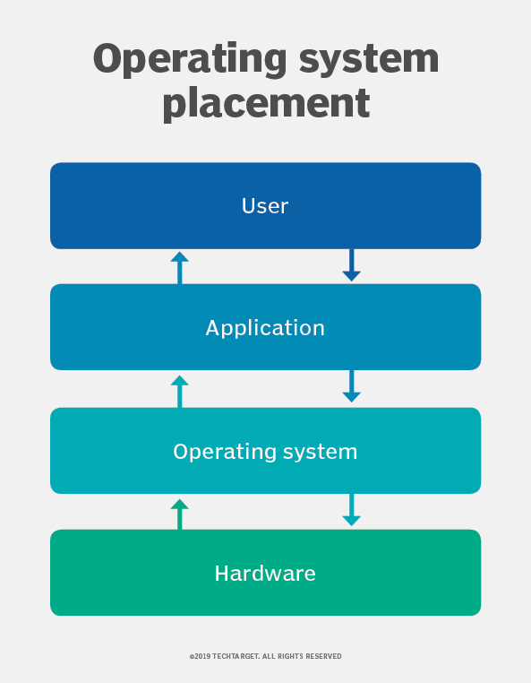

Home
Operating systems were first developed in the late 1950s to manage tape storage. The General Motors Research Lab implemented the first OS in the early 1950s for their IBM 701. In the mid-1960s, operating systems started to use disks. In the late 1960s, the first version of the Unix OS was developed. The first OS built by Microsoft was DOS. It was built in 1981 by purchasing the 86-DOS software from a Seattle company. The present-day popular OS Windows first came to existence in 1985 when a GUI was created and paired with MS-DOS.
An operating system is the primary software that manages all the hardware and other software on a computer. The operating system, also known as an “OS,” interfaces with the computer’s hardware and provides services that applications can use
